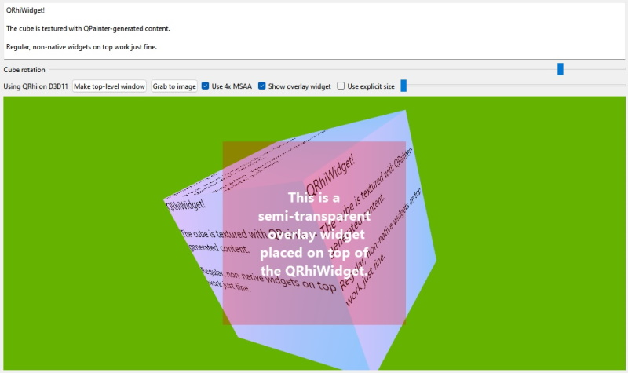

Cube RHI Widget Example
Shows how to render a textured cube and integrate with QPainter and widgets, using QRhi Qt's 3D API and shading language abstraction layer.

Screenshot of the Cube RHI Widget example
This example builds on the Simple RHI Widget Example. While the simple example is intentionally minimal and as compact as possible, rendering only a single triangle with no additional widgets in the window, this application demonstrates:
- Having various widgets in the window, some of them controlling data that is consumed by the QRhiWidget subclass.
- Instead of continuously requesting updates, the QRhiWidget here only updates the content in its backing texture when some related data changes.
- The cube is textured using a QRhiTexture that sources its content from a QImage that contains software-based rendering performed with QPainter.
- The contents of the QRhiWidget can be read back and saved to an image file (e.g. a PNG file).
- 4x multisample antialiasing can be toggled at run time. The QRhiWidget subclass is prepared to handle the changing sample count correctly.
- Forcing an explicitly specified backing texture size can be toggled dynamically and controlled with a slider between 16x16 up to 512x512 pixels.
- The QRhiWidget subclass deals with a changing QRhi correctly. This can be seen in action when making the widget top-level (no parent; becomes a separate window) and then reparenting it again into the main window's child hierarchy.
- Most importantly, some widgets, with semi-transparency even, can be placed on top of the QRhiWidget, proving that correct stacking and blending is feasible. This is a case where QRhiWidget is superior to embedding a native window, i.e. a QRhi-based QWindow using QWidget::createWindowContainer(), because it allows stacking and clipping the same way as any ordinary, software-rendered QWidget, whereas native window embedding may, depending on the platform, have various limitations, e.g. often it can be difficult or inefficient to place additional controls on top.
In the reimplementation of initialize(), the first thing to do is to check if the QRhi we last worked with is still up-to-date, and if the sample count (for multisample antialiasing) has changed. The former is important because all graphics resources must be released when the QRhi changes, whereas with a dynamically changing sample count a similar problem arises specifically for QRhiGraphicsPipeline objects as those bake the sample count in. For simplicity, the application handles all such changes the same way, by resetting its scene struct to a default constructed one, which conveniently drops all graphics resources. All resources are then recreated.
When the backing texture size (so the render target size) changes, no special action is needed, but a signal is emitted for convenience, just so that main() can reposition the overlay label. The 3D API name is also exposed via a signal by querying QRhi::backendName() whenever the QRhi changes.
The implementation has to be aware that multisample antialiasing implies that colorTexture() is nullptr, while msaaColorBuffer() is valid. This is the opposite of when MSAA is not in use. The reason for differentiating and using different types (QRhiTexture, QRhiRenderBuffer) is to allow using MSAA with 3D graphics APIs that do not have support for multisample textures, but have support for multisample renderbuffers. An example of this is OpenGL ES 3.0.
When checking the up-to-date pixel size and sample count, a convenient and compact solution is to query via the QRhiRenderTarget, because this way one does not need to check which of colorTexture() and msaaColorBuffer() are valid.
void ExampleRhiWidget::initialize(QRhiCommandBuffer *) { if (m_rhi != rhi()) { m_rhi = rhi(); scene = {}; emit rhiChanged(QString::fromUtf8(m_rhi->backendName())); } if (m_pixelSize != renderTarget()->pixelSize()) { m_pixelSize = renderTarget()->pixelSize(); emit resized(); } if (m_sampleCount != renderTarget()->sampleCount()) { m_sampleCount = renderTarget()->sampleCount(); scene = {}; }
The rest is quite self-explanatory. The buffers and pipelines are (re)created, if necessary. The contents of the texture that is used to texture the cube mesh is updated. The scene is rendered using a perspective projection. The view is just a simple translation for now.
if (!scene.vbuf) {
initScene();
updateCubeTexture();
}
scene.mvp = m_rhi->clipSpaceCorrMatrix();
scene.mvp.perspective(45.0f, m_pixelSize.width() / (float) m_pixelSize.height(), 0.01f, 1000.0f);
scene.mvp.translate(0, 0, -4);
updateMvp();
}
The function that performs the actual enqueuing of the uniform buffer write is also taking the user-provided rotation into account, thus generating the final modelview-projection matrix.
void ExampleRhiWidget::updateMvp() { QMatrix4x4 mvp = scene.mvp * QMatrix4x4(QQuaternion::fromEulerAngles(QVector3D(30, itemData.cubeRotation, 0)).toRotationMatrix()); if (!scene.resourceUpdates) scene.resourceUpdates = m_rhi->nextResourceUpdateBatch(); scene.resourceUpdates->updateDynamicBuffer(scene.ubuf.get(), 0, 64, mvp.constData()); }
Updating the QRhiTexture that is sampled in the fragment shader when rendering the cube, is quite simple, even though a lot is happening in there: first a QPainter-based drawing is generated within a QImage. This uses the user-provided text. Then the CPU-side pixel data is uploaded to a texture (more precisely, the upload operation is recorded on a QRhiResourceUpdateBatch, which is then submitted later in render()).
void ExampleRhiWidget::updateCubeTexture() { QImage image(CUBE_TEX_SIZE, QImage::Format_RGBA8888); const QRect r(QPoint(0, 0), CUBE_TEX_SIZE); QPainter p(&image); p.fillRect(r, QGradient::DeepBlue); QFont font; font.setPointSize(24); p.setFont(font); p.drawText(r, itemData.cubeText); p.end(); if (!scene.resourceUpdates) scene.resourceUpdates = m_rhi->nextResourceUpdateBatch(); scene.resourceUpdates->uploadTexture(scene.cubeTex.get(), image); }
The graphics resource initialization is simple. There is only a vertex buffer, no index buffer, and a uniform buffer with only a 4x4 matrix in it (16 floats).
The texture that contains the QPainter-generated drawing has a size of 512x512. Note that all sizes (texture sizes, viewports, scissors, texture upload regions, etc.) are always in pixels when working with QRhi. To sample this texture in the shader, a sampler object is needed (irrespective of the fact that QRhi-based applications will typically use combined image samplers in the GLSL shader code, which then may be transpiled to separate texture and sampler objects with some shading languages, or may stay a combined texture-sampler object with others, meaning there may not actually be a native sampler object under the hood at run time, depending on the 3D API, but this is all transparent to the application)
The vertex shader reads from the uniform buffer at binding point 0, therefore scene.ubuf is exposed at that binding location. The fragment shader samples a texture provided at binding point 1, therefore a combined texture-sampler pair is specified for that binding location.
The QRhiGraphicsPipeline enables depth test/write, and culls backfaces. It also relies on a number of defaults, e.g. the depth comparison function defaults to Less, which is fine for us, and the front face mode is counter-clockwise, which is also good as-is so does not need to be set again.
scene.vbuf.reset(m_rhi->newBuffer(QRhiBuffer::Immutable, QRhiBuffer::VertexBuffer, sizeof(cube)));
scene.vbuf->create();
scene.resourceUpdates = m_rhi->nextResourceUpdateBatch();
scene.resourceUpdates->uploadStaticBuffer(scene.vbuf.get(), cube);
scene.ubuf.reset(m_rhi->newBuffer(QRhiBuffer::Dynamic, QRhiBuffer::UniformBuffer, 64));
scene.ubuf->create();
scene.cubeTex.reset(m_rhi->newTexture(QRhiTexture::RGBA8, CUBE_TEX_SIZE));
scene.cubeTex->create();
scene.sampler.reset(m_rhi->newSampler(QRhiSampler::Linear, QRhiSampler::Linear, QRhiSampler::None,
QRhiSampler::ClampToEdge, QRhiSampler::ClampToEdge));
scene.sampler->create();
scene.srb.reset(m_rhi->newShaderResourceBindings());
scene.srb->setBindings({
QRhiShaderResourceBinding::uniformBuffer(0, QRhiShaderResourceBinding::VertexStage, scene.ubuf.get()),
QRhiShaderResourceBinding::sampledTexture(1, QRhiShaderResourceBinding::FragmentStage, scene.cubeTex.get(), scene.sampler.get())
});
scene.srb->create();
scene.ps.reset(m_rhi->newGraphicsPipeline());
scene.ps->setDepthTest(true);
scene.ps->setDepthWrite(true);
scene.ps->setCullMode(QRhiGraphicsPipeline::Back);
scene.ps->setShaderStages({
{ QRhiShaderStage::Vertex, getShader(QLatin1String(":/shader_assets/texture.vert.qsb")) },
{ QRhiShaderStage::Fragment, getShader(QLatin1String(":/shader_assets/texture.frag.qsb")) }
});
QRhiVertexInputLayout inputLayout;
// The cube is provided as non-interleaved sets of positions, UVs, normals.
// Normals are not interesting here, only need the positions and UVs.
inputLayout.setBindings({
{ 3 * sizeof(float) },
{ 2 * sizeof(float) }
});
inputLayout.setAttributes({
{ 0, 0, QRhiVertexInputAttribute::Float3, 0 },
{ 1, 1, QRhiVertexInputAttribute::Float2, 0 }
});
scene.ps->setSampleCount(m_sampleCount);
scene.ps->setVertexInputLayout(inputLayout);
scene.ps->setShaderResourceBindings(scene.srb.get());
scene.ps->setRenderPassDescriptor(renderTarget()->renderPassDescriptor());
scene.ps->create();
In the reimplementation of render(), first the user-provided data is checked. If the QSlider controlling the rotation has provided a new value, or the QTextEdit with the cube text has changed its text, the graphics resources the contents of which depend on such data get updated.
Then, a single render pass with a single draw call is recorded. The cube mesh data is provided in a non-interleaved format, hence the need for two vertex input bindings, one is the positions (x, y, z) the other is the UVs (u, v), with a start offset that corresponds to 36 x-y-z float pairs.
void ExampleRhiWidget::render(QRhiCommandBuffer *cb) { if (itemData.cubeRotationDirty) { itemData.cubeRotationDirty = false; updateMvp(); } if (itemData.cubeTextDirty) { itemData.cubeTextDirty = false; updateCubeTexture(); } QRhiResourceUpdateBatch *resourceUpdates = scene.resourceUpdates; if (resourceUpdates) scene.resourceUpdates = nullptr; const QColor clearColor = QColor::fromRgbF(0.4f, 0.7f, 0.0f, 1.0f); cb->beginPass(renderTarget(), clearColor, { 1.0f, 0 }, resourceUpdates); cb->setGraphicsPipeline(scene.ps.get()); cb->setViewport(QRhiViewport(0, 0, m_pixelSize.width(), m_pixelSize.height())); cb->setShaderResources(); const QRhiCommandBuffer::VertexInput vbufBindings[] = { { scene.vbuf.get(), 0 }, { scene.vbuf.get(), quint32(36 * 3 * sizeof(float)) } }; cb->setVertexInput(0, 2, vbufBindings); cb->draw(36); cb->endPass(); }
How is the user-provided data sent? Take the rotation for example. main() connects to the QSlider's valueChanged signal. When emitted, the connected lamda calls setCubeRotation() on the ExampleRhiWidget. Here, if the value is different from before, it is stored, and a dirty flag is set. Then, most importantly, update() is called on the ExampleRhiWidget. This is what triggers rendering a new frame into the QRhiWidget's backing texture. Without this the content of the ExampleRhiWidget would not update when dragging the slider.
void setCubeTextureText(const QString &s)
{
if (itemData.cubeText == s)
return;
itemData.cubeText = s;
itemData.cubeTextDirty = true;
update();
}
void setCubeRotation(float r)
{
if (itemData.cubeRotation == r)
return;
itemData.cubeRotation = r;
itemData.cubeRotationDirty = true;
update();
}
See also QRhi, Simple RHI Widget Example, and RHI Window Example.